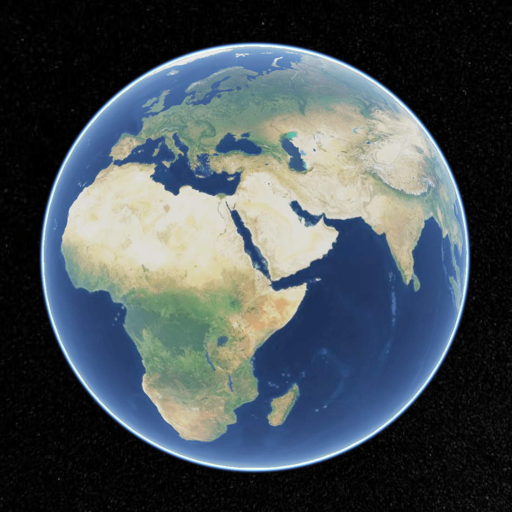
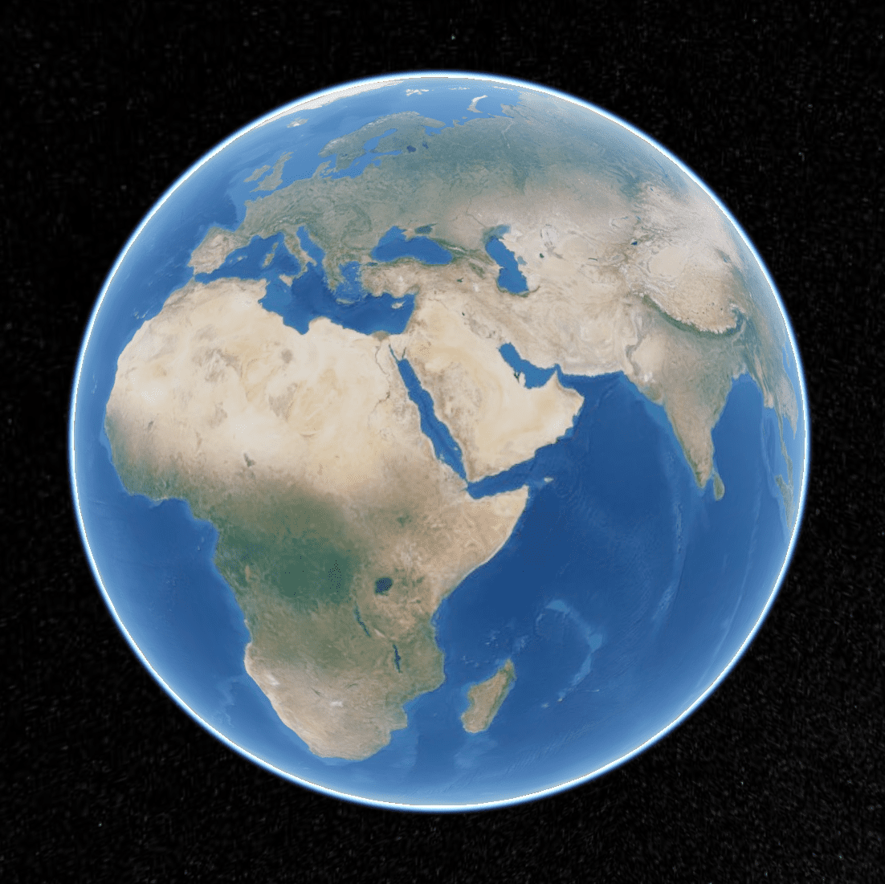
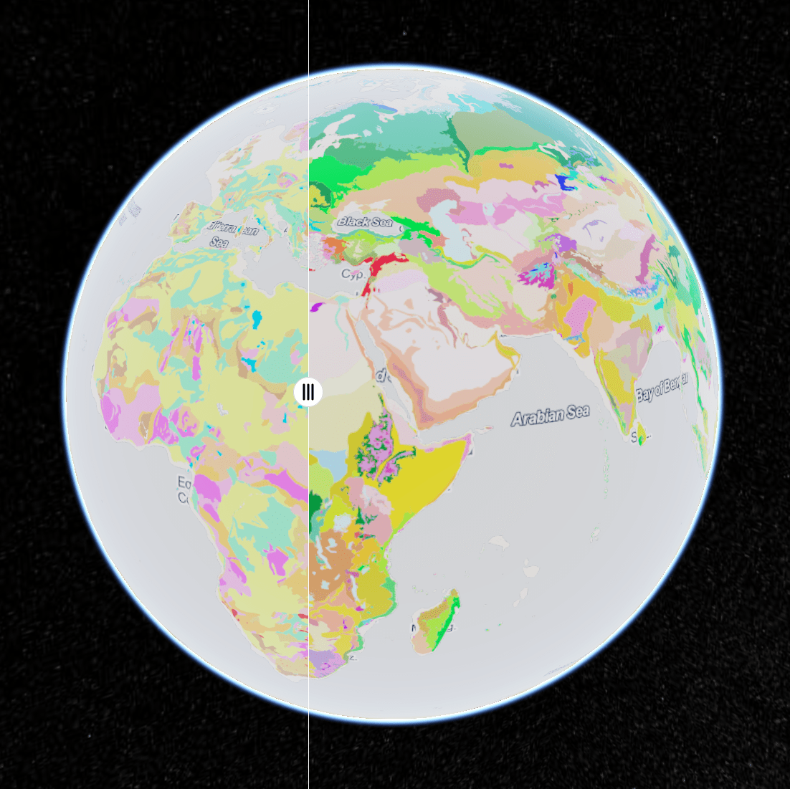

Ley Lines are said to be the veins of the earth and crisscross the entire planet. They are created through cracks in the tectonic plate, where the natural energy is released. Ley Lines can vary in width and believed to be the life blood of Mother Earth. They are thought by some, to have spiritual, healing and extraterrestrial significance. Ley Lines follow tracks or paths under the earthâs surface, which can stretch for miles that cross valleys, mountains and under the sea.
Most cultures have traditions and words to describe the straight, often geometric alignments that ran across ancient landscapes, connecting both natural and sacred prehistoric structures together. Usually the names given to represent these invisible lines are translated to an equivalent of 'spirit', 'dream', or 'energy' paths. However, apart from the physical presence of the sites themselves, proving the presence of a 'connection' between them is something that researchers have found notoriously elusive.
Ley lines /leɪ laɪnz/ are apparent alignments of places of significance in the geography or culture of an area, often including man-made structures. They are in the older sense, ancient, straight trackways in the British landscape, or in the newer sense, spiritual and mystical alignments of land forms. (Wikipedia)
Ley/Li/Lei : "The supposed straight line of a prehistoric track usually between hilltops" (Concise Oxford Dictionary)
"Alignments and patterns of powerful, invisible earth energy said to connect various sacred sites, such as churches, temples, stone circles, megaliths, holy wells, burial sites, and other locations of spiritual or magical importance". (Harper's Encyclopaedia of Mystical and Paranormal Experience)
Praesent posuere fringilla elit, non maximus tellus posuere nec. Nunc eu sapien nec est elementum sodales.

Virtual Globe
CesiumJS
CesiumJS is a JavaScript library for creating 3D globes and 2D maps in a web browser without a plugin. It uses WebGL for hardware-accelerated graphics, and is cross-platform, cross-browser, and tuned for dynamic-data visualization.
TerriaJS
TerriaJS is a library for building rich, web-based geospatial data explorers, used to drive National Map, AREMI and NEII Viewer. It uses Cesium and WebGL for a full 3D globe in the browser with no plugins. It gracefully falls back to 2D with Leaflet on systems that can't run Cesium.

Imagery
Base Maps from various providers
Different Base Maps selectable from various providers like Bing Maps, ESRI, Openstreetmap, Stamen or Digital Globe.Every Base Map is zoomable and has more details as you zoom in.

Layers
Layers for a lot of different themes like different kinds of spiritual places and environmental parameters.
IntroducingLeylines
Praesent posuere fringilla elit, non maximus tellus posuere nec. Nunc eu sapien nec est elementum sodales.
Top Performance
Donec sit amet tempor quam. Maecenas nec aliquam leo, sed tincidunt urna.
Trusted Service
Etiam at porta nulla, et euismod enim. Nullam semper ipsum et dui scelerisque.
Need Help?
Phasellus orci leo, elementum ac risus id, euismod porta lorem. Quisque feugiat.
Quick Support
Mauris eu est vitae erat condimentum pellentesque. Fusce vehicula nunc.
OurTeam
Aenean a consectetur mi, sit amet consequat velit. Mauris vitae nunc viverra, mattis arcu quis, vestibulum eros.
Joerg RothDesigner
Contact
Aenean a consectetur mi, sit amet consequat velit. Mauris vitae nunc viverra, mattis arcu quis, vestibulum eros.


{kind=link}
{kind=link}
{kind=link}
{kind=link}
{kind=link}
{kind=link}
{kind=link}
{kind=link}
{kind=link}
{kind=link}
{kind=link}
{kind=link}
{kind=link}
{kind=link}
{kind=link}
{kind=link}